4. The course web page¶
4.1. Overview¶
Note
You must think about the course web page like the course’s landing page.
At this web page, potential students will reach through the use of search engines or through other websites where you announce the course. It is important to present the information about the course in a clear and attractive way.
The URL of the course web is optimized for search engines:
https://demo.openmooc.org/course/openmooc-guide-creating-courses/
This is the appearance of the course web page:
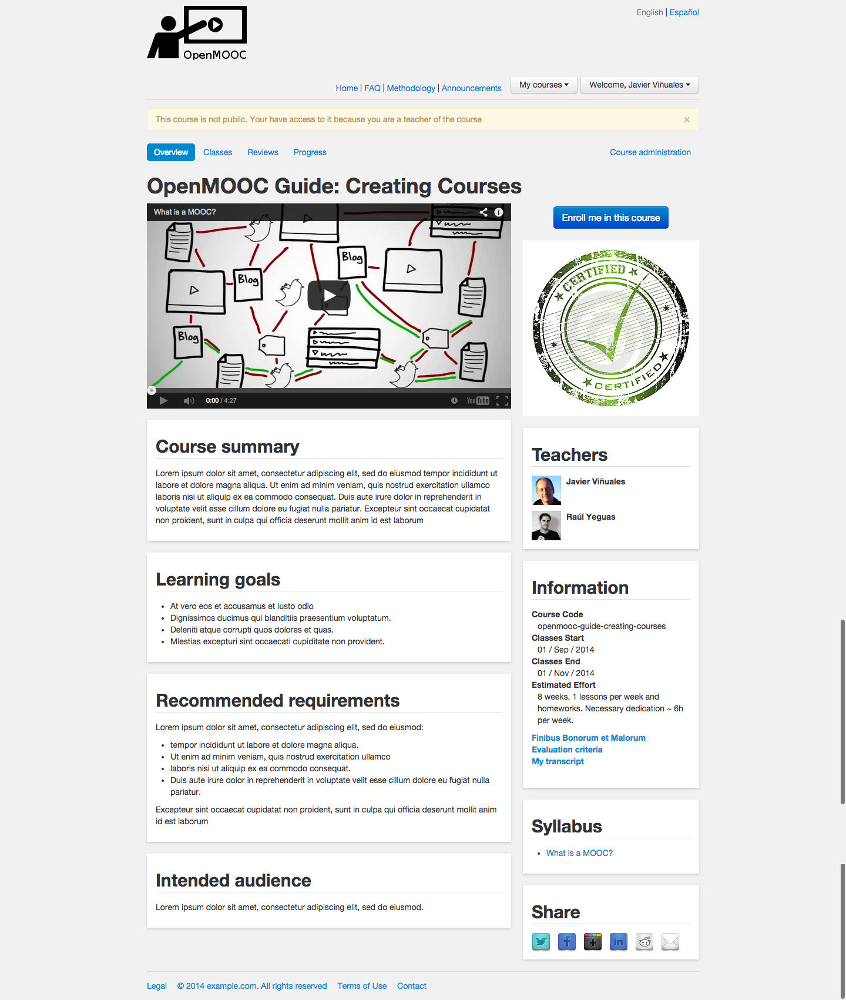
Important
To assure that your fill the information in the text boxes Description, Requirements, Intended audience, Estimated effort and Learning goals.
4.2. Accessing to the editing course tool¶
When you are already logged, you havet to go the course web page and then, click on the Course administration link.
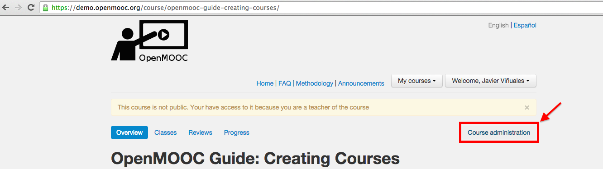
You will go to the OpenMOOC’s course edition tool. The first thing you see is editing course information, which is what forms the course web page.
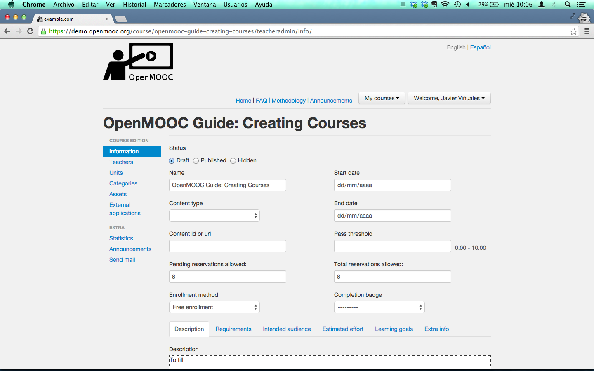
Note
The course will always be created in draft state. In the current draft status is listed in the list of courses available but only viewable by the course teachers and administrators of the platform. If the course is in hidden state, it will not appear on the list. If you pass the course to published status, everyone can see it on the list and enroll.
4.3. Adding the video intro to the course¶
You must select an online video source to insert it in the course web page like an intro to the course. OpenMOOC needs the URL of the video and actually supports Youtube, Vimeo, Scribd and Prezi.
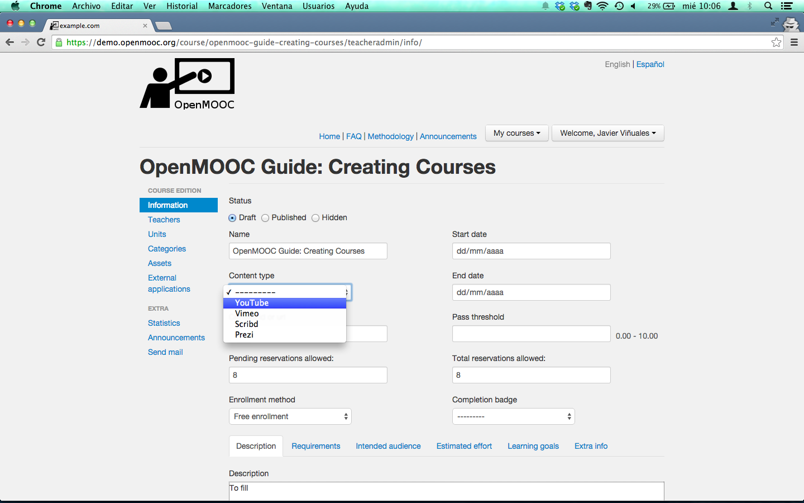
Now you can choose a video from Youtube, copy the URL and...
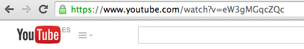
...paste it into the text box in the course edition tool.
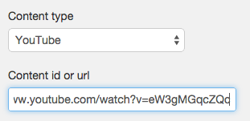
Note
We recommend the use of a Youtube Channel for each organization and then, the use of playlists to group videos for each course. You can use channels on Vimeo too, and albums to group videos for each course.
4.4. Setting the start date and end date of the course¶
You can enter the start date by hand into the text box or choose it from the calendar view.
Do the same to enter the end date of the course.
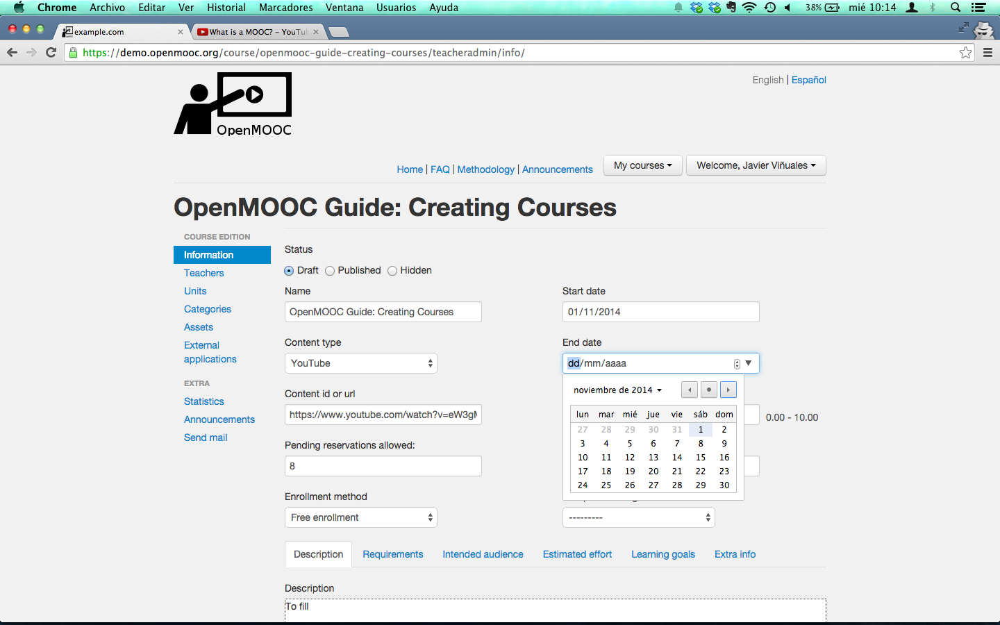
Important
Before the start date and being in published state, anyone can enroll. After the end date, the course will be closed.
4.5. Setting the threshold to pass the course¶
You must fix the threshold to pass the course. If a student’s grade in the course exceeds the threshold, are deemed to have accepted the course, and if you created a certificate for the course, the student may obtain it.
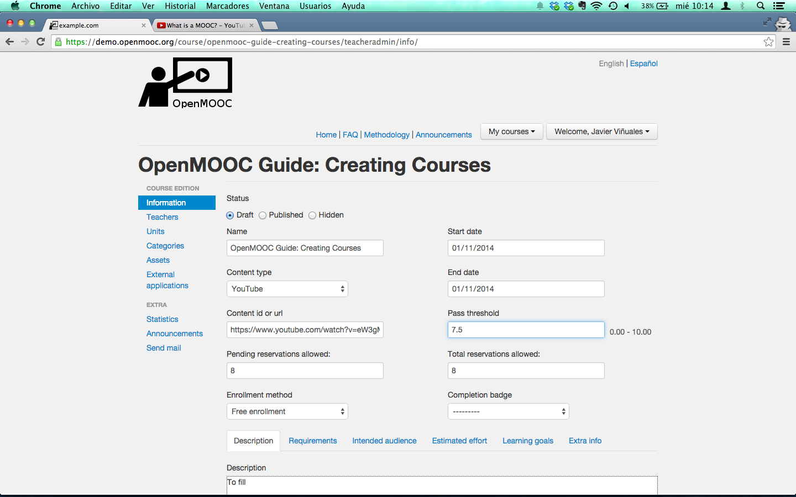
4.6. Writing the description of the course¶
The description of the course is formed by the contents of the tabs Description, Requirements, Intended audience, Estimated effort and Learning goals. It’s very important not leave empty the contents of the previous tabs. An additional tab named Extra info is optional.
Fill Description text area.
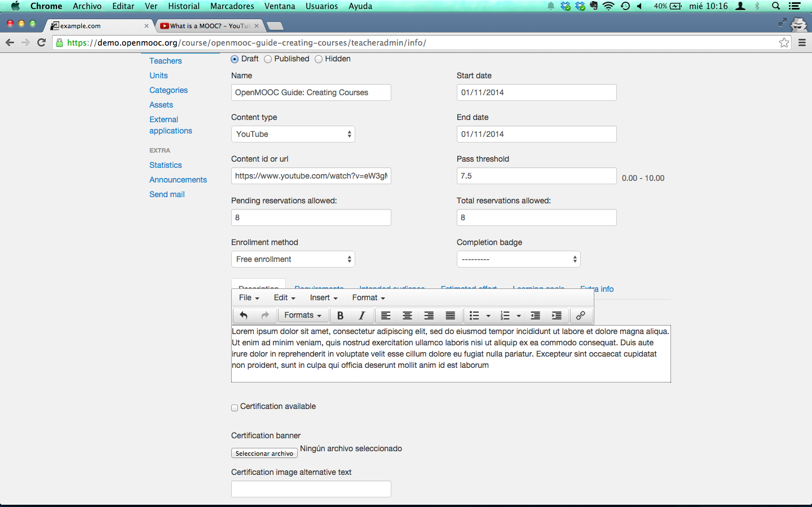
Fill Requirements text area.
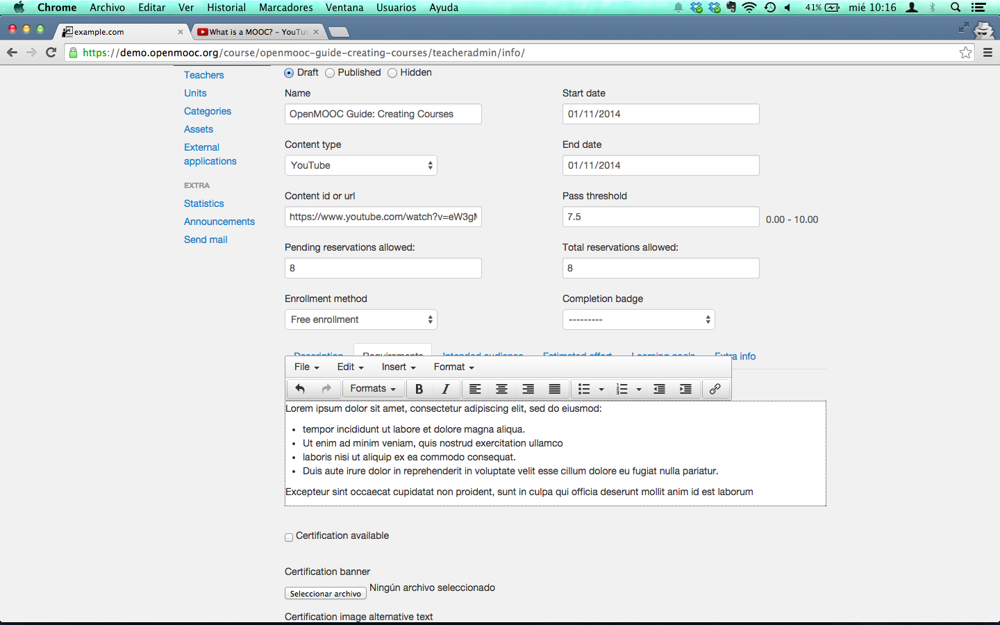
Fill Intended audience text area.
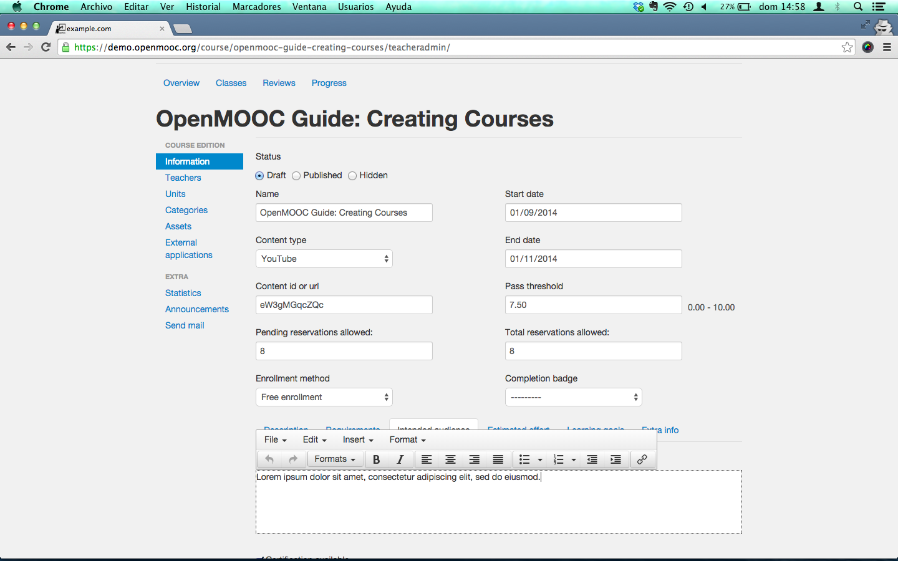
Fill Estimated effort text area.
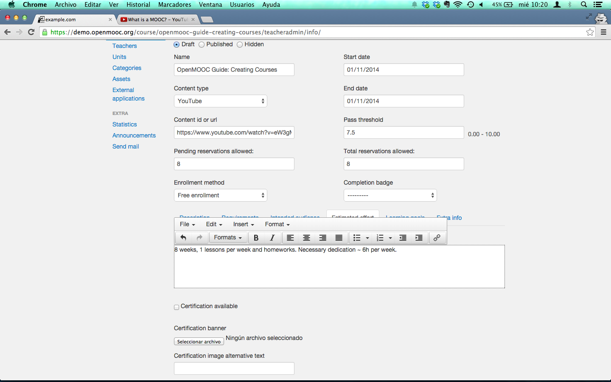
Fill Learning goals text area.
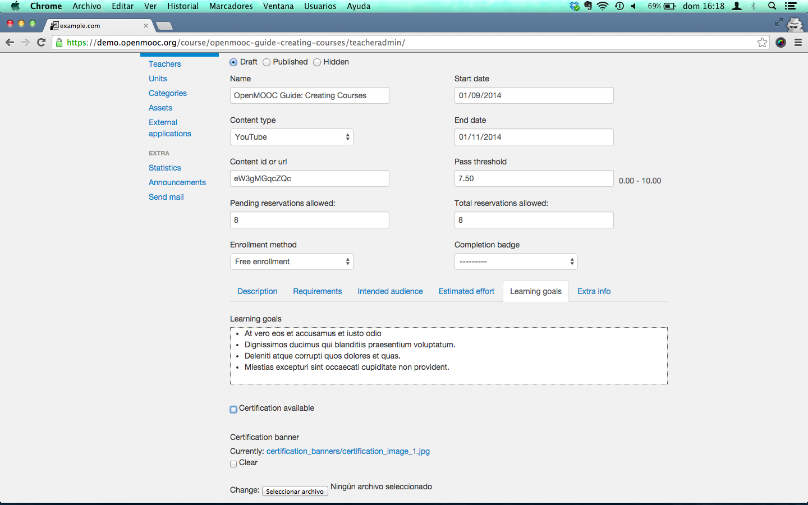
Optionally, fill Extra info text area.
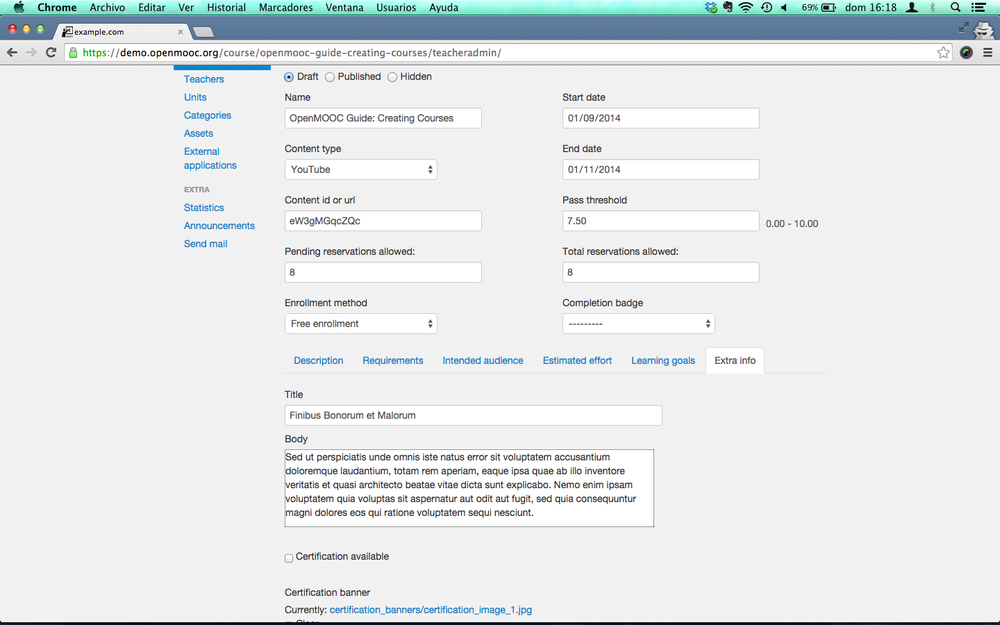
4.7. Associating a certificate to the course¶
You must select the Certification available check box and choose a file to use like the certification’s logo. You can select the logo file from your file system.
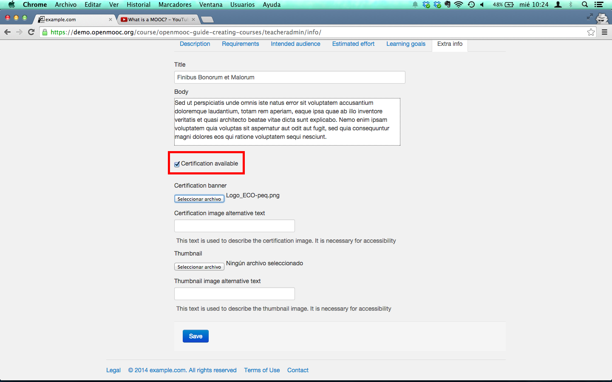
The last thing you have to do is add an alternative text to the image of the certification, and click on the Save button you can find in the bottom of the course web.
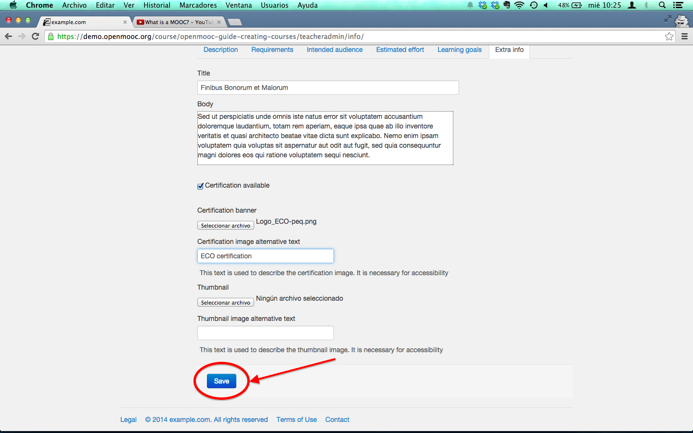